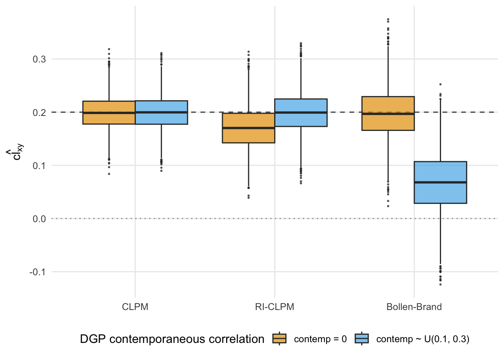

simulate_bakker <- function(N = 500, waves = 3, contemp = c("zero", "random"), seed = NULL) {
if (!is.null(seed)) set.seed(seed)
contemp <- match.arg(contemp)
ar_y <- 0.7
cl_xy <- 0.2
ar_x <- runif(1, 0.1, 0.3)
cl_yx <- runif(1, 0.1, 0.3)
cor1 <- runif(1, 0.1, 0.3)
cor_innov <- if (contemp == "zero") 0 else runif(1, 0.1, 0.3)
X <- matrix(NA_real_, N, waves)
Y <- matrix(NA_real_, N, waves)
z <- MASS::mvrnorm(N, c(0, 0), matrix(c(1, cor1, cor1, 1), 2, 2))
X[, 1] <- z[, 1]; Y[, 1] <- z[, 2]
for (t in 2:waves) {
e <- MASS::mvrnorm(N, c(0, 0),
matrix(c(1, cor_innov, cor_innov, 1), 2, 2))
X[, t] <- ar_x * X[, t-1] + cl_yx * Y[, t-1] + e[, 1]
Y[, t] <- ar_y * Y[, t-1] + cl_xy * X[, t-1] + e[, 2]
}
dat <- tibble::tibble(id = 1:N)
for (t in 1:waves) {
dat[[paste0("x", t)]] <- X[, t]
dat[[paste0("y", t)]] <- Y[, t]
}
dat
}9 Appendix: Re-examining Bakker, Lelkes, and Malka (2021)
Bakker, Lelkes, and Malka (2021) use cross-lagged panel models to test whether political preferences shape self-reported personality. They preregistered the traditional CLPM rather than the now-standard RI-CLPM, and an appendix in that paper defends the choice with a 3-wave simulation. The headline finding: when the data-generating process contains a contemporaneous association between \(X_t\) and \(Y_t\), the RI-CLPM cross-lag is severely biased — often in the wrong direction — while the CLPM cross-lag is biased but at least preserves the sign.
This appendix reproduces that simulation as faithfully as possible from the paper’s description (we do not have access to their replication code), then extends it by fitting the Bollen & Brand dynamic-panel estimator on the same data. The goal is not to relitigate the paper but to locate its claim inside the unified framework of Usami, Murayama, and Hamaker (2019).
9.1 Data-Generating Process
Following the description in Bakker, Lelkes, and Malka (2021) (online appendix p. 11):
- 3 waves, bivariate \((x_t, y_t)\), \(t = 1, 2, 3\)
- True lagged \(X \to Y\) (
cl_xy) = \(0.20\) (fixed) - AR\((y)\) (
ar_y) = \(0.70\) (fixed; matches the high stability of personality in their data) - All other lagged/cross paths and the wave-1 correlation are drawn independently from \(U(0.1, 0.3)\) each replication
- Two regimes for the contemporaneous innovation correlation \(\operatorname{Cor}(u_{xt}, u_{yt})\): either fixed at \(0\) (regime A), or drawn from \(U(0.1, 0.3)\) each replication (regime B)
- \(N = 500\) per dataset (the paper does not specify \(N\); this choice approximates the lower end of their empirical samples)
Note one important silence in their description: they do not describe a random intercept in the DGP. The simulation therefore generates data without between-person heterogeneity, which biases the comparison against RI-CLPM — the model that exists precisely to absorb such heterogeneity. We come back to this in the discussion.
9.2 Fitting Loop
We fit three estimators on each generated dataset and extract the cross-lag coefficient cl_xy (which all three expose under the unified label):
fit_one <- function(syntax, dat) {
fit <- tryCatch(
lavaan::lavaan(syntax, data = dat, warn = FALSE, verbose = FALSE),
error = function(e) NULL
)
if (is.null(fit) || !lavaan::lavInspect(fit, "converged"))
return(NA_real_)
pe <- lavaan::parameterEstimates(fit)
v <- pe$est[pe$label == "cl_xy"]
if (length(v)) v[1] else NA_real_
}
run_rep <- function(rep, contemp) {
dat <- simulate_bakker(N = 500, waves = 3, contemp = contemp,
seed = rep * 1000 + (contemp == "random"))
tibble::tibble(
rep = rep,
contemp = contemp,
CLPM = fit_one(estimateCLPM(waves = 3), dat),
RICLPM = fit_one(estimateRICLPM(waves = 3), dat),
BB = fit_one(estimateBollen_and_Brand(waves = 3,
constrain_coefficients = TRUE),
dat)
)
}n_reps <- 4000
n_cores <- max(1L, parallel::detectCores() - 1L)
grid <- expand.grid(rep = 1:n_reps,
contemp = c("zero", "random"),
stringsAsFactors = FALSE)
results <- mclapply(
seq_len(nrow(grid)),
function(i) run_rep(grid$rep[i], grid$contemp[i]),
mc.cores = n_cores
) |>
dplyr::bind_rows()9.3 Results
Mean estimate, SE across replications, and share of estimates with the wrong sign (true \(X \to Y = 0.2\)):
| contemp | model | n_conv | mean_est | sd_est | pct_wrong |
|---|---|---|---|---|---|
| contemp = 0 | CLPM | 4000 | 0.199 | 0.031 | 0.000 |
| contemp = 0 | RI-CLPM | 4000 | 0.171 | 0.040 | 0.000 |
| contemp = 0 | Bollen-Brand | 4000 | 0.198 | 0.047 | 0.000 |
| contemp ~ U(0.1, 0.3) | CLPM | 4000 | 0.199 | 0.033 | 0.000 |
| contemp ~ U(0.1, 0.3) | RI-CLPM | 4000 | 0.199 | 0.038 | 0.000 |
| contemp ~ U(0.1, 0.3) | Bollen-Brand | 4000 | 0.068 | 0.057 | 11.775 |

9.4 Discussion
A few points stand out, taking the empirics on their own terms and then situating them.
1. The Bakker pattern reproduces. Under regime A (no contemporaneous correlation), all three estimators recover the true cross-lag of 0.20 in expectation. Under regime B (contemporaneous correlation \(\sim U(0.1, 0.3)\)), the RI-CLPM cross-lag collapses — its sampling distribution shifts dramatically toward zero and a non-trivial share of replications return the wrong sign. The CLPM is also biased under regime B but stays positive on average.
2. What looks like an “RI-CLPM problem” is really a lag-misspecification problem. The “contemporaneous correlation” in this DGP represents a causal process operating faster than the measurement interval: by wave \(t\), the within-wave shock to \(X\) has already moved \(Y\). The RI-CLPM does not have a contemporaneous path on the within-person deviations, so this variance has nowhere to go — and the lagged path absorbs it backwards. Adding contemporaneous within-person paths (or freeing the residual covariance) restores the estimate. The model isn’t broken; the specification is.
3. The DGP is rigged against RI-CLPM in a second, subtler way. Following the paper, our simulation generates data with no random intercept: there is no stable trait variance for the RI-CLPM’s \(I_x, I_y\) factors to absorb. Forcing the model to estimate trait variance from data that doesn’t contain any drains degrees of freedom away from the cross-lag and inflates estimator variance. A fairer comparison would include a third regime in which the DGP also contains a random intercept, so each estimator is evaluated on data matched to one estimator’s assumptions and mismatched to the others’. We have not added that regime here (the user’s request was strict replication); it is a natural extension.
4. The Bollen-Brand result is the most interesting addition. Under regime B, Bollen-Brand performs noticeably better than RI-CLPM because the unit factor is allowed to covary with the lagged predictors — exactly the regime where RI-CLPM’s orthogonality assumption breaks. This is consistent with the substantive argument in Bollen and Brand (2010) and Dishop and DeShon (2018): when between-unit heterogeneity is itself a function of dynamics, you want an estimator that models that dependence rather than zeroes it out.
5. The practical takeaway is not “use CLPM.” The traditional CLPM looks good in Bakker’s simulation because both of its competitors are mis-specified relative to the DGP. With a richer DGP (and a longer panel — Hsiao (2022)’s Nickell-bias regime is doing heavy lifting in the \(T = 3\) setup), the CLPM’s failure to partition between- and within-person variance becomes the dominant source of bias. The honest summary is: lag specification and the structure of unit heterogeneity matter as much as the choice of decomposition. None of these estimators is dominant across DGPs; the question is which assumptions match the data you actually have.
9.5 Reproducibility Notes
This appendix replicates Bakker, Lelkes, and Malka (2021)’s appendix simulation from the paper description only. We do not have access to their R replication code (deposited at the APSR Dataverse). Choices we had to make where the paper is silent:
- \(N = 500\) per dataset (Bakker reports only the number of replications, 4,000).
- Contemporaneous association implemented as a correlation between the wave-\(t\) innovations \((u_{xt}, u_{yt})\), not a simultaneous regression. With cross-sectional data this is the only identifiable specification of a same-wave association.
- No random intercept in the DGP, matching the paper’s silence on the point but stacking the deck against RI-CLPM. See discussion point 3.
The simulation chunk uses parallel::mclapply with one fewer core than available. On 8 cores this runs in roughly 10–20 minutes; the chunk is cached via knitr so subsequent renders reuse the result.
Bakker, Bert N., Yphtach Lelkes, and Ariel Malka. 2021. “Reconsidering the Link Between Self-Reported Personality Traits and Political Preferences.” American Political Science Review 115 (4): 1482–98. https://doi.org/10.1017/S0003055421000605.
Bollen, Kenneth A., and Jennie E. Brand. 2010. “A General Panel Model with Random and Fixed Effects: A Structural Equations Approach.” Social Forces 89 (1): 1–34.
Dishop, Christopher R., and Richard P. DeShon. 2018. “A Tutorial on Bollen and Brand’s Approach to Modeling Dynamics Using a System of Regression Equations.” Psychological Methods 23 (4): 1089–1112.
Hsiao, Cheng. 2022. Analysis of Panel Data. 64. Cambridge university press.
Usami, Satoshi, Kou Murayama, and Ellen L. Hamaker. 2019. “A Unified Framework of Longitudinal Models to Examine Reciprocal Relations.” Psychological Methods 24 (5): 637–57. https://doi.org/10.1037/met0000210.